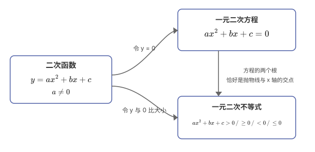
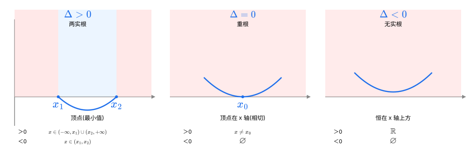
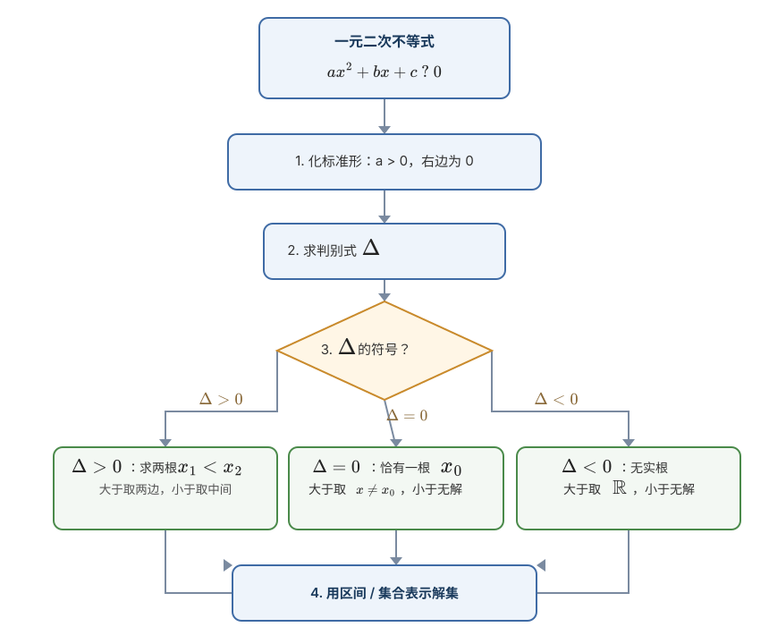
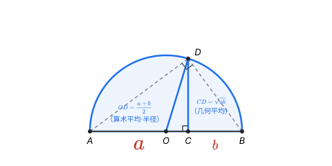
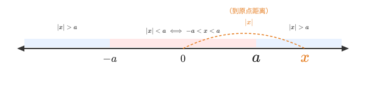
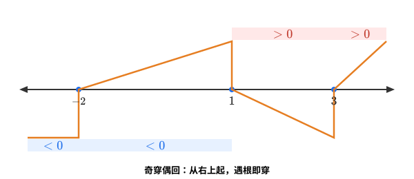

方程求的是某一个确定的值；不等式求的是一整个范围。
| 语言描述 | 数学表达 |
|---|---|
| $a$ 大于 $b$ | $a > b$ |
| $a$ 大于或等于 $b$ | $a \geq b$ |
| $a$ 小于 $b$ | $a < b$ |
| $a$ 小于或等于 $b$ | $a \leq b$ |
| $a$ 不等于 $b$ | $a \neq b$ |
| 序号 | 性质 | 内容（$a,b,c$ 为实数） |
|---|---|---|
| 1 | 对称性 | $a>b \Longleftrightarrow b<a$ |
| 2 | 传递性 | $a>b,\ b>c\ \Rightarrow\ a>c$ |
| 3 | 可加性 | $a>b\ \Rightarrow\ a+c>b+c$ |
| 4 | 可乘性 | $a>b,\ c>0\Rightarrow ac>bc$；$c<0\Rightarrow ac<bc$ |
| 5 | 同向相加 | $a>b,\ c>d\ \Rightarrow\ a+c>b+d$ |
| 6 | 同向相乘 | $a>b>0,\ c>d>0\ \Rightarrow\ ac>bd$ |
| 7 | 乘方 | $a>b>0,\ n\in\mathbb{N}^*\ \Rightarrow\ a^n>b^n$ |
| 8 | 开方 | $a>b>0,\ n\in\mathbb{N}^*\ \Rightarrow\ \sqrt[n]{a}>\sqrt[n]{b}$ |
| 序号 | 易错点 | 正确做法 |
|---|---|---|
| 1 | 乘（除）负数变号 | $a>b\ \Rightarrow\ ac<bc\ (c<0)$，解不等式头号翻车点 |
| 2 | 同向相乘要正数 | $a>b,\ c>d$ 有负数时不能直接相乘 |
| 3 | 倒数不等式变号 | $a>b>0\ \Rightarrow\ \dfrac1a<\dfrac1b$，分母越大倒数越小 |

| 判别式 | 图像位置 | $ax^2+bx+c>0$ | $ax^2+bx+c<0$ |
|---|---|---|---|
| $\Delta>0$ 两根 $x_1<x_2$ | 交于两点 | $x<x_1$ 或 $x>x_2$ | $x_1<x<x_2$ |
| $\Delta=0$ 一根 $x_0$ | 相切 | $x\neq x_0$ | 无解 $\emptyset$ |
| $\Delta<0$ 无实根 | 全在轴上方 | 全体实数 $\mathbb{R}$ | 无解 $\emptyset$ |


解：因式分解 $x^2-3x-4=(x-4)(x+1)$
自己按流程算一算：先化正变号，再因式分解、求根、写解集。
解：两边同乘 $-1$ 变号 → $2x^2-3x-2\geq 0$

例题5：已知 $x>0$，求 $x+\dfrac1x$ 的最小值，自己先算。


| 思想 | 在不等式中的体现 |
|---|---|
| 数形结合 | 二次→抛物线，均值→半圆，绝对值→数轴距离 |
| 转化与化归 | 分式→整式，高次→穿针，绝对值→分段，最值→定值 |
| 分类讨论 | 参数不明（二次项、判别式、区间）时分类，不重不漏 |
| 函数与方程 | 不等式常挂靠函数图像解决 |